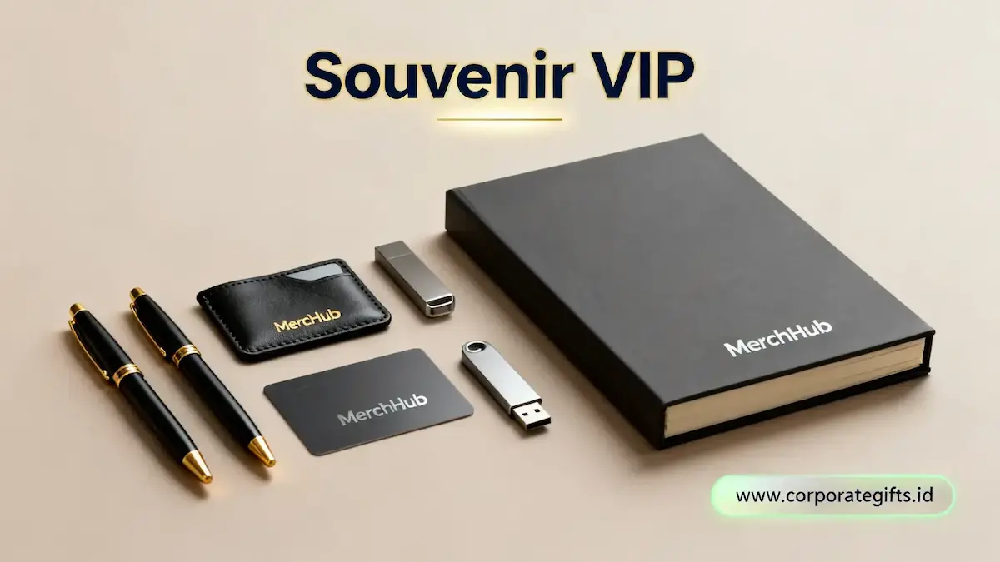

Corporate Gifts ID - Souvenir VIP perusahaan adalah hadiah eksklusif berkualitas tinggi yang diberikan kepada klien, mitra bisnis, atau karyawan kunci untuk memperkuat citra profesional dan membangun loyalitas jangka panjang. Kategori paling diminati mencakup set kulit eksekutif, jam custom logo, padfolio kulit, alat tulis premium, dan tumbler stainless custom. Souvenir VIP paling efektif diberikan pada momen strategis seperti anniversary perusahaan, client appreciation event, dan partnership signing, sehingga dampaknya terhadap reputasi bisnis dapat bertahan jauh lebih lama.
Semakin personal pesan yang disematkan dan semakin premium kemasannya, semakin besar pula dampaknya terhadap persepsi merek perusahaan pemberi di mata para pemangku kepentingan.
Poin Kunci Souvenir VIP Perusahaan:
- Komunikasi Non-Verbal: Souvenir VIP mencerminkan kualitas, kedewasaan, dan profesionalisme institusi pengirim.
- Personalisasi Eksklusif: Grafir nama, jabatan, atau pesan khusus membuat penerima merasa diakui dan dihargai secara individual.
- Kemasan Mewah: Hardbox magnetik berlapis satin dengan deboss/foil logo emas memperkuat impresi unboxing sejak detik pertama.
- Kategori Terfavorit: Set eksekutif kulit PU, jam custom, padfolio agenda, pulpen metal premium, dan tumbler SUS304.
- Ketepatan Momentum: Paling efektif dihadirkan pada HUT perusahaan, client gathering, dan penandatanganan MoU kerja sama strategis.
Mengapa Souvenir VIP Penting untuk Citra Perusahaan?
Souvenir VIP memegang peranan krusial karena hadiah tersebut berfungsi sebagai perpanjangan tangan dari identitas, visi, dan nilai profesionalitas perusahaan.
Saat institusi memberikan hadiah eksklusif kepada klien penting atau mitra korporat, hal ini bukan sekadar bentuk apresiasi seremonial, melainkan pernyataan nyata tentang mutu layanan dan kepedulian terhadap detail hubungan kerja sama.
Sebuah cinderamata yang dirancang secara elegan dan personal sanggup menumbuhkan rasa kepemilikan serta loyalitas yang sulit digantikan oleh strategi pemasaran konvensional.
Dalam ekosistem souvenir kantor premium, perusahaan modern senantiasa menggabungkan fungsi praktis harian, nilai estetika tinggi, dan teknik kustomisasi presisi dalam satu bingkai produk terpadu.
Tujuannya tidak hanya menciptakan kebahagiaan sesaat saat serah terima, melainkan memastikan bahwa setiap kali cinderamata tersebut digunakan di meja kerja, reputasi unggul perusahaan Anda selalu hadir dalam ingatan mereka.
Apa Saja Kategori Souvenir VIP yang Paling Diminati Perusahaan di 2026?
Kebutuhan souvenir VIP korporat di tahun 2026 semakin mengerucut pada lima kategori unggulan yang memadukan prestise material dan kegunaan nyata:
1. Set Eksekutif Berbahan Kulit PU
Set cinderamata berbahan kulit sintetis premium (kulit PU berkualitas tinggi) tetap menduduki peringkat teratas karena tampilannya yang berkelas serta daya tahan fisiknya yang prima.
Paket ini umumnya memuat dompet kartu nama bisnis, gantungan kunci kulit eksklusif, pouch organizer kabel, dan pena logam berukir logo perusahaan.
Hadiah jenis ini sangat tepat dipersembahkan untuk klien prioritas, jajaran direksi, komisaris, atau mitra strategis yang kemitraannya ingin dipelihara dalam jangka panjang.
Souvenir VIP berbahan kulit memperlihatkan karakter perusahaan yang matang, mapan, dan mengutamakan mutu tanpa kompromi.

Paket souvenir VIP eksekutif: notebook hardcover hitam elegan, pulpen metal emas, USB flashdisk metal, dan card wallet kulit mewah.
2. Jam Tangan atau Jam Dinding Custom Logo
Jam tangan eksklusif dengan sentuhan grafir logo presisi di pelat belakang melambangkan penghargaan tinggi terhadap waktu, komitmen, dan integritas kemitraan.
Cinderamata ini amat relevan untuk eksekutif puncak yang menjunjung tinggi ketepatan jadwal dan prestise penampilan formal.
Sementara itu, jam dinding meja atau jam dinding lobi dengan aksen kayu dan logam sering dipilih untuk menghiasi ruang kerja dewan direksi mitra bisnis.
3. Padfolio dengan Sampul Kulit
Padfolio profesional atau buku catatan rapat dengan sampul kulit deboss menghadirkan nuansa eksklusif di setiap forum bisnis penting.
Produk ini menjadi primadona pada simposium korporat, rapat kerja pimpinan, dan forum negosiasi level direktur.
Padfolio bekerja efektif sebagai instrumen branding elegan karena logo korporat dapat diterapkan dengan teknik blind deboss atau hot stamping foil emas tanpa terkesan mencolok.
4. Set Alat Tulis Premium
Kombinasi pulpen rollerball logam berlapis krom, stylus pen presisi, dan kemasan hardbox bludru merupakan opsi klasik bernilai tinggi.
Hadiah ini merefleksikan perhatian instansi terhadap instrumen kerja yang esensial, sekaligus memberi kebanggaan tersendiri saat digunakan menandatangani dokumen perjanjian penting.
5. Tumbler Stainless Custom Logo
Tumbler stainless vacuum insulated SUS304 berdesain minimalis kini menjadi simbol gaya hidup modern sekaligus kepedulian terhadap kelestarian lingkungan.
Banyak institusi terkemuka memilih tumbler custom sebagai cerminan komitmen ESG (Environmental, Social, and Governance).
Dengan frekuensi pemakaian harian yang sangat tinggi, visibilitas brand perusahaan Anda akan terus terpapar secara organik di berbagai meja kerja mitra.
Apa Faktor Penting dalam Memilih Souvenir VIP yang Tepat?
Faktor paling menentukan dalam kurasi souvenir VIP adalah kedalaman personalisasi emosional dan kualitas kemasan pembungkusnya.
Mengapa Personalisasi Sangat Krusial bagi Penerima?
Personalisasi nama, gelar kehormatan, atau pesan apresiasi khusus membuat cinderamata memiliki nilai sentimental yang tak ternilai.
Ketika sebuah instansi meluangkan waktu untuk menyematkan identitas personal penerima, mereka merasa diakui sebagai individu yang bernilai strategis, bukan sekadar penerima bingkisan massal.
Bagaimana Kemasan Memengaruhi Kesan Pertama?
Kemasan merupakan titik sentuh pertama sebelum isi produk dilihat. Pengalaman membuka kotak (unboxing experience) yang berkelas akan langsung menentukan persepsi awal penerima terhadap kredibilitas perusahaan Anda.
Penggunaan hardbox magnetik, lapisan busa EVA presisi (laser die-cut), dan kain satin berkualitas tinggi memberi jaminan keamanan produk sekaligus kemewahan visual.
Corporate Gifts mengelola seluruh rantai pengadaan ini secara terpadu dari hulu ke hilir, mulai dari konsultasi konsep, pembuatan sampel fisik, produksi masal, hingga quality control ketat.
Kapan Waktu Terbaik Memberikan Souvenir VIP?
Waktu penyerahan menentukan seberapa dalam pesan apresiasi tertanam di hati penerima. Berikut momentum strategis korporat beserta rekomendasi jenis souvenirnya:
| Momen Acara | Rekomendasi Souvenir VIP |
|---|---|
| Anniversary & HUT Perusahaan | Executive Leather Set, Jam Dinding Custom Logo, Plakat Kristal Etsa |
| Client Appreciation Event | Padfolio Kulit Deboss, Smart Digital Tumbler LED, Wireless Charger Pad |
| Partnership Signing Ceremony (MoU) | Set Pulpen Metal Grafir Parker/Rollerball, Plakat Kuningan Box Beludru |
| Penghargaan Tahunan Karyawan (Annual Award) | Trophy Logam 3D Custom, Jam Tangan Eksekutif, Employee Reward Box |
Pemberian cinderamata yang selaras dengan momentum tersebut terbukti melipatgandakan dampak psikologis positif bagi relasi bisnis.
Bagaimana Souvenir VIP Menjadi Investasi Reputasi Jangka Panjang?
Souvenir VIP bukanlah pos biaya pengeluaran konsumtif, melainkan investasi reputasi brand dengan imbal hasil (ROI) relasional jangka panjang.
Cinderamata yang dirancang secara matang mampu mengunci retensi loyalitas klien B2B, memupuk kebanggaan internal karyawan teladan, serta mengukuhkan posisi institusi Anda sebagai entitas yang profesional dan tepercaya.
Kesimpulan dan Konsultasi Souvenir VIP
Souvenir VIP perusahaan bukan sekadar formalitas seremonial, melainkan instrumen investasi reputasi yang berdampak nyata terhadap kelanggengan kemitraan B2B dan kebanggaan tim internal.
Dengan kurasi kategori yang presisi, kustomisasi nama yang bermakna, dan kemasan hardbox mewah, cinderamata VIP Anda akan terus bekerja memperkuat kredibilitas brand di setiap meja eksekutif.
Siap menyiapkan souvenir VIP eksklusif untuk agenda bisnis penting perusahaan Anda di 2026? Konsultasikan kebutuhan paket gift set, padfolio kulit, pulpen grafir laser, dan tumbler premium bersama tim spesialis Corporate Gifts sekarang juga.